Toxicité, dose-réponse et DL50
La toxicité d'une substance dépend de la dose, du seuil d'apparition et du type d'effet (aigu vs chronique). On la caractérise par les courbes dose-réponse, les indicateurs DL50 / CL50, et les valeurs toxicologiques de référence (NOAEL, LOAEL, DJA, DVS). Pour les cancérogènes génotoxiques, on suppose qu'il n'y a pas de seuil sécuritaire.
Table des matières
- Notion d'effet toxique
- Dose et relation dose-réponse
- Seuils et indicateurs
- Valeurs toxicologiques de référence (VTR)
- Aigu vs chronique
- Application terrain
- Ressources
Notion d'effet toxique
L'effet toxique = perturbation des processus d'adaptation de l'organisme. Trois types
| Type | Description | Réversibilité typique |
|---|---|---|
| Fonctionnel | Atteinte transitoire d'une fonction (par ex. ↑ fréquence respiratoire) | Réversible |
| Lésionnel | Lésion morphologique (par ex. fibrose pulmonaire) | Souvent irréversible |
| Biochimique | Altération sans lésion visible (par ex. inhibition cholinestérases par organophosphorés) | Variable |
{kind=link}
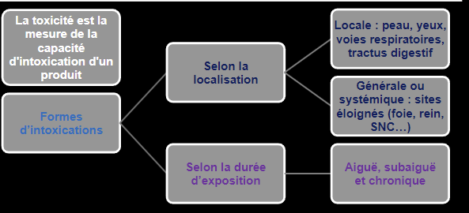
Toucher l'image pour l'agrandirRéversibilité : foie = grande capacité de régénération ; SNC = atteintes souvent irréversibles. Toujours irréversibles : mutagenèse, cancérogenèse, tératogenèse, sensibilisation allergique, neurotoxicité permanente.
Facteurs de modulation : voie de pénétration, toxicité intrinsèque, dose, élimination, variation biologique (âge, sexe, génétique, médicaments, alcool, tabac).
Dose et relation dose-réponse
- Dose-effet (individu) : intensité ou nombre de symptômes en fonction de la dose.
{kind=link}
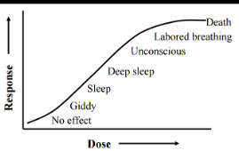
Toucher l'image pour l'agrandir- Dose-réponse (population) : pourcentage d'individus présentant un effet donné. Utilisée pour établir les valeurs limites d'exposition.
{kind=link}
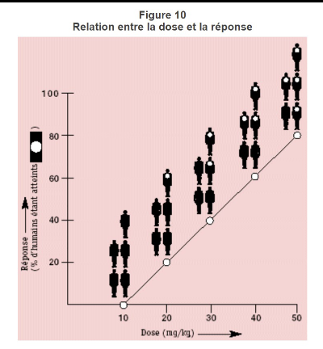
Toucher l'image pour l'agrandirReprésentation : axe x logarithmique (large plage de doses).
{kind=link}
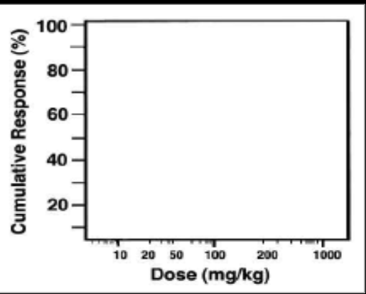
Toucher l'image pour l'agrandirLa courbe cumulative est utilisée pour situer la DL50 et autres percentiles d'effet.
{kind=link}
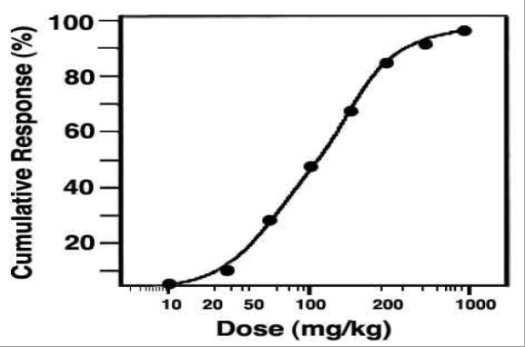
Toucher l'image pour l'agrandirPour certains éléments essentiels (Zn, Se, Cu), la courbe a un aspect en U : carence à faible dose, toxicité à forte dose.
{kind=link}
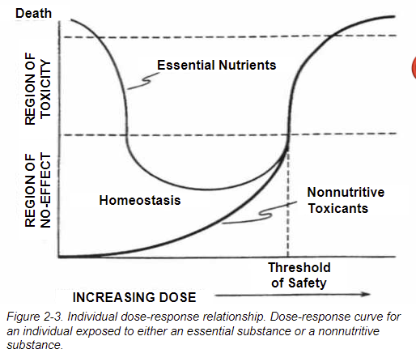
Toucher l'image pour l'agrandirCourbes avec seuil vs sans seuil
| Type | Hypothèse | Substances concernées |
|---|---|---|
| Avec seuil | Dose minimale en dessous = aucun effet | Non cancérogènes, cancérogènes non génotoxiques |
| Sans seuil | Tout niveau d'exposition implique un risque | Cancérogènes génotoxiques, mutagènes |
{kind=link}
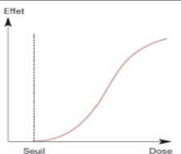
Toucher l'image pour l'agrandir{kind=link}
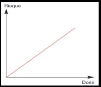
Toucher l'image pour l'agrandirSeuils et indicateurs
| Acronyme | Signification | Usage |
|---|---|---|
| NOEL | No Observed Effect Level | Aucun effet, toxique ou non |
| LOEL | Lowest Observed Effect Level | Plus faible dose avec effet |
| NOAEL | No Observed Adverse Effect Level | Aucun effet nocif observé |
| LOAEL | Lowest Observed Adverse Effect Level | Plus faible dose avec effet nocif |
| DL50 | Dose létale 50 % (orale ou cutanée) | Toxicité aiguë |
| CL50 | Concentration létale 50 % (inhalation) | Toxicité aiguë |
{kind=link}
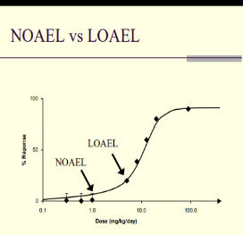
Toucher l'image pour l'agrandirNOAEL et LOAEL sont la base de l'évaluation des risques.
DL50 indicatives : toxine botulique 0,001 µg/kg (extrêmement toxique) ; nicotine ~1 mg/kg ; sel de table ~3000 mg/kg.
{kind=link}
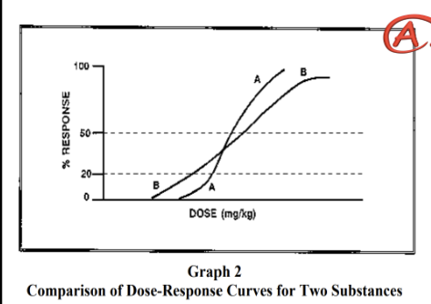
Toucher l'image pour l'agrandir{kind=link}
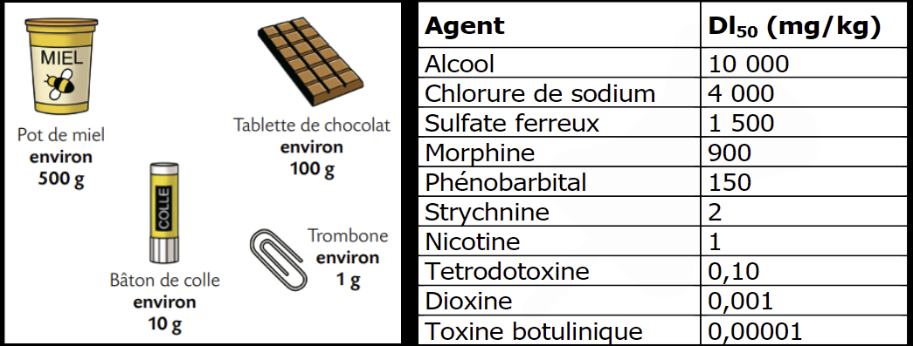
Toucher l'image pour l'agrandirValeurs toxicologiques de référence (VTR)
Avec seuil : DJA
DJA (dose journalière acceptable) = NOAEL (ou LOAEL) / FS
{kind=link}
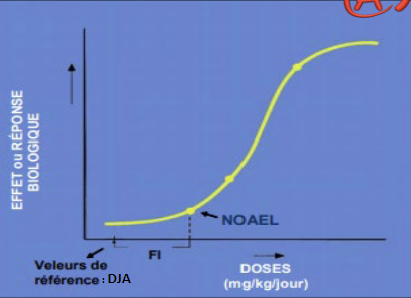
Toucher l'image pour l'agrandir- Facteur de sécurité (FS) : produit de facteurs d'incertitude. Classiquement FS = 100 (10 animal → humain × 10 humain → humain).
- FS supplémentaires si : LOAEL au lieu de NOAEL, durée d'étude courte, données limitées.
- Base d'exposition : 70 ans (population générale, EPA) ou 40 ans (milieu de travail).
Sans seuil : DVS
Pour cancérogènes génotoxiques. DVS (dose virtuellement sécuritaire) = dose pour laquelle l'excès de risque acceptable (ERC) ≤ 1 cas / 10^5 ou 10^6 personnes exposées.
Aigu vs chronique
| Type | Durée d'exposition | Délai effet | Exemple |
|---|---|---|---|
| Suraigu | Secondes à minutes | Immédiat | Inhalation H2S concentré |
| Aigu | Minutes à heures, dose unique | < 24 h ou jours | Intoxication CO au sautage |
| Subchronique | Semaines à mois | Variable | Solvants à doses modérées |
| Chronique | Années, vie professionnelle | Latence longue (10-30 ans) | Silicose, mésothéliome, cancer professionnel |
Une même substance peut changer d'organe-cible : éthanol aigu = SNC ; chronique = foie. Benzène aigu = SNC ; chronique = moelle osseuse (leucémie).
Le plus fréquent en milieu de travail = chronique. Plus difficile à diagnostiquer.
Application terrain
| Type d'effet | Exemple minier | VTR ou seuil applicable |
|---|---|---|
| Aigu létal | H2S dans sulfures, CO post-tir | VECD H2S 15 ppm ; VEMP CO 35 ppm |
| Aigu non létal | NOx post-sautage (œdème pulmonaire retardé) | VEMP NO2 0,2 ppm |
| Chronique fibrosant | Silicose chez foreurs et concassage | VEMP Programme de prévention silice cristalline respirable 0,025 mg/m³ |
| Chronique cancérogène | DPM (CIRC 1), Amiante des bâtiments anciens | Approche sans seuil, DVS |
| Bioaccumulation | Plomb (peintures anciennes), arsenic (gisements Au) | Surveillance Pb-S, As urinaire |
La majorité des risques chimiques en mine relève du chronique : exposition modérée mais répétée sur 20-30 ans de carrière, avec latence longue avant manifestation clinique. D'où l'importance d'un programme de surveillance biologique et d'un suivi des expositions par poste.
Ressources
| Document | Type | Source |
|---|---|---|
| Fiches toxicologiques (NOAEL, LOAEL, DJA) | Fiches | INRS, IRSST |
| Liste DL50/CL50 par substance | Référentiel | HSDB, ECHA |
| Recueil VTR par voie | Référentiel | RIVM, US-EPA IRIS |
Articles wiki connexes
Pages qui pointent ici (21)
- 🎯 Démarrage rapide, conseiller SST Toxicologie
- 🏠 Wiki Toxicologie, mines Toxicologie
- ADME, cheminement des contaminants dans l'organisme Toxicologie
- Évaluation et priorisation chimique Toxicologie
- Hépatotoxicité et néphrotoxicité Toxicologie
- Introduction à la toxicologie industrielle Toxicologie
- Maladies professionnelles en mine Toxicologie
- Métaux toxiques en milieu de travail Hygiène industrielle
- Métaux toxiques en milieu de travail Toxicologie
- Multiexposition aux contaminants Hygiène industrielle
- Multiexposition aux contaminants Toxicologie
- Mutagénicité et cancérogénicité Toxicologie
- Neurotoxicité, hématotoxicité et toxicité endocrinienne Toxicologie
- Outils de priorisation des risques chimiques Hygiène industrielle
- Outils de priorisation des risques chimiques Toxicologie
- SIMDUT et classes de danger Hygiène industrielle
- SIMDUT et classes de danger Toxicologie
- Solvants organiques Hygiène industrielle
- Solvants organiques Toxicologie
- Toxicocinétique Toxicologie
- Toxicologie clinique Toxicologie